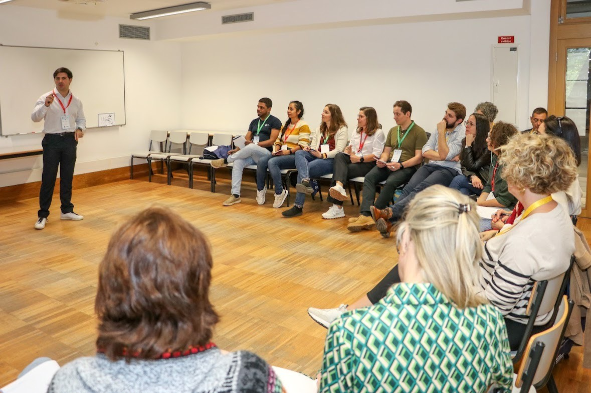
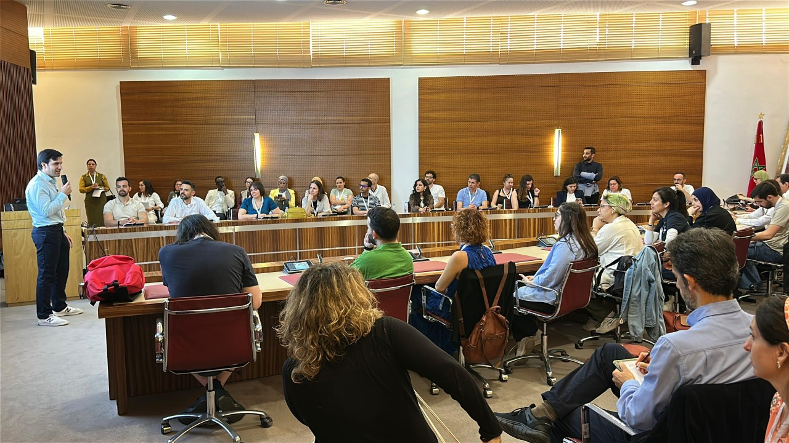

You sound smaller than your expertise
You have the knowledge, but when you speak, your confidence does not always show.
Your ideas are not the problem.
The problem is that people do not feel them yet.
PROBLEM
You have the knowledge, but when you speak, your confidence does not always show.
They explain the technical details, but the value gets buried under too much information.
The slides are accurate, but you can't persuade the audience.


SERVICES
Speak with more confidence, clarity, and presence.
Help your team present complex ideas so people actually care.
Human talks on communication, confidence, storytelling, and data.
THE STORY
I had the expertise. The data. The credentials.
But every time I stood up to speak, I disappeared behind my slides. I was good at talking. Terrible at connecting.
Someone pulled me aside after a talk and said:
"Mirko, you're pretending to be somebody else."
It hit because it was true. I was hiding behind professionalism, behind data, behind the need to prove myself.
I stopped performing and started connecting.
Through coaching, Toastmasters, competitions, improv and stand-up, I learned what I now teach: the content was never the problem.
The Method
Audience → Message → Story.
Know who you’re speaking to, what they care about, and why they should care.
Find the one clear takeaway behind the technical information.
Use stakes, emotion, humor, and transformation so the data becomes human.